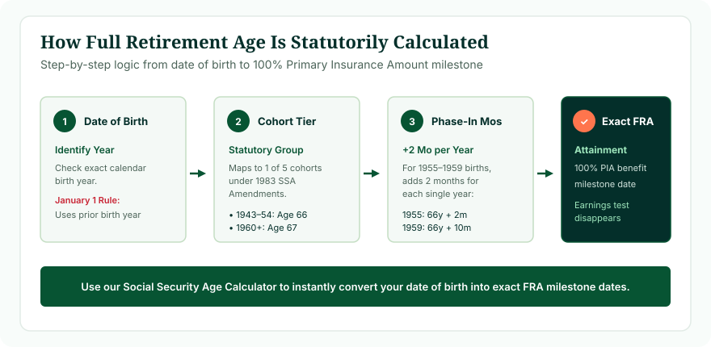
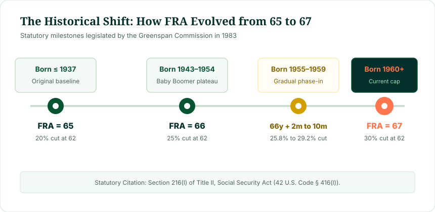

Your Social Security Full Retirement Age is calculated using a straightforward statutory lookup formula codified in 42 U.S. Code § 416(l):
- Born 1937 or earlier: FRA is exactly 65 years.
- Born 1938–1942: FRA is 65 years + 2 months per year beyond 1937.
- Born 1943–1954: FRA is exactly 66 years flat.
- Born 1955–1959: FRA is 66 years + 2 months per year beyond 1954 (66y 2m, 66y 4m, 66y 6m, 66y 8m, 66y 10m).
- Born 1960 or later: FRA is exactly 67 years flat.
- Special January 1 Rule: Individuals born on January 1 are legally deemed to attain their age on December 31, assigning them to the prior calendar birth year.
Your career earnings, tax payments, and marital status do NOT change your Full Retirement Age. Your birth date alone establishes your FRA threshold. To calculate your exact calendar date of attainment, use our Social Security Age Calculator.
What Is Full Retirement Age (FRA)?
Full Retirement Age (often abbreviated as "FRA" or referred to in statute as "normal retirement age") is the exact chronological age at which a covered worker qualifies to receive 100% of their statutory Primary Insurance Amount (PIA) without early claiming penalties under Title II of the Social Security Act.
Reaching FRA confers three critical legal rights:
- 100% Unreduced Benefit: No actuarial early retirement reductions are subtracted from your baseline earnings entitlement.
- Elimination of Earnings Limit: The Retirement Earnings Test is eliminated entirely, permitting unlimited wage income without benefit withholding.
- Right to Accrue Delayed Credits: Postponing claims beyond FRA earns guaranteed Delayed Retirement Credits (+8% per year) until age 70.

Figure 1: The statutory calculation architecture established under Title II of the Social Security Act.
Is Full Retirement Age Actually "Calculated"?
Many citizens wonder whether the government performs a personalized financial equation to calculate their FRA—similar to how it calculates their Primary Insurance Amount by indexing historical wages across 35 years.
In statutory reality, Full Retirement Age is not an individual calculation; it is an algorithmic legal lookup. The Social Security Administration does not examine your payroll tax records, employment tenure, or health history to establish your FRA. The calculation is purely chronological: it takes your birth date, applies federal statutory rules, and outputs your required years and months.
The 4-Step Statutory Algorithm Used by the SSA
When the Social Security Administration processes your birth date, it executes the following four-step calculation sequence:
- Step 1: Statutory Birth Year Assignment: The SSA checks your day and month of birth. If born on January 1, you are shifted to the prior calendar year under the legal doctrine of age attainment.
- Step 2: Statutory Bracket Lookup: The birth year is cross-referenced with Section 216(l) of the Social Security Act to identify the applicable cohort bracket.
- Step 3: Phase-In Increment Calculation: For individuals in transition cohorts (1938–1942 or 1955–1959), the SSA calculates the incremental phase-in:
Incremental Months = (Birth Year - Base Year) × 2 Months - Step 4: Calendar Date Computation: The calculated years and months are added to your birth date to identify the exact month and year when 100% PIA benefits become payable.
The Official Statutory Full Retirement Age Schedule
The complete statutory timetable established by Congress under the Social Security Amendments of 1983 (Public Law 98-21):
| Birth Year | Full Retirement Age | Early Claiming Cut at 62 | Maximum Payout at 70 |
|---|---|---|---|
| 1937 or Earlier | 65 Years | -20.00% (80.0% Payout) | +15.0% to +26.0% |
| 1938 | 65 Years + 2 Months | -20.83% (79.17% Payout) | +28.0% Payout |
| 1939 | 65 Years + 4 Months | -21.67% (78.33% Payout) | +27.3% Payout |
| 1940 | 65 Years + 6 Months | -22.50% (77.50% Payout) | +26.7% Payout |
| 1941 | 65 Years + 8 Months | -23.33% (76.67% Payout) | +26.0% Payout |
| 1942 | 65 Years + 10 Months | -24.17% (75.83% Payout) | +25.3% Payout |
| 1943–1954 | 66 Years Flat | -25.00% (75.00% Payout) | +32.0% (132.0% Payout) |
| 1955 | 66 Years + 2 Months | -25.83% (74.17% Payout) | +30.7% (130.7% Payout) |
| 1956 | 66 Years + 4 Months | -26.67% (73.33% Payout) | +29.3% (129.3% Payout) |
| 1957 | 66 Years + 6 Months | -27.50% (72.50% Payout) | +28.0% (128.0% Payout) |
| 1958 | 66 Years + 8 Months | -28.33% (71.67% Payout) | +26.7% (126.7% Payout) |
| 1959 | 66 Years + 10 Months | -29.17% (70.83% Payout) | +25.3% (125.3% Payout) |
| 1960 or Later | 67 Years Flat | -30.00% (70.00% Payout) | +24.0% (124.0% Payout) |
For additional analysis of this schedule, see our detailed guide: Social Security Retirement Age Chart: The 1955–1960 Phase-In.

Figure 2: The historical progression of Full Retirement Age legislated by the Greenspan Commission in 1983.
Why Does Full Retirement Age Depend on Birth Year?
The variation in Full Retirement Age is the result of bipartisan compromise. In 1983, the Social Security Trust Funds faced impending insolvency. The National Commission on Social Security Reform (led by Alan Greenspan) recommended increasing the retirement age to reflect rising American longevity:
- When Social Security was enacted in 1935: Life expectancy at birth was approximately 61 years, and an average 65-year-old lived roughly 12 additional years.
- By 1983: Average life expectancy at 65 had expanded to nearly 17 years.
- The Gradual Phase-In: Rather than suddenly raising the retirement age for current retirees, Congress enacted a 40-year multi-stage phase-in, ensuring that workers approaching retirement were not blindsided by abrupt legislative shifts.
The 1955–1960 Phase-In Window: Two Months Per Year
The most commonly searched cohort tier today is the second transition window (1955–1959). For each calendar year that a worker was born after 1954, Congress added exactly two additional months to their retirement age:
Phase-In Increment Formula
This mathematical progression smoothly bridged the 11-year plateau of age 66 to the modern statutory benchmark of age 67.
How Is FRA Calculated for Someone Born in 1959?
Applying the statutory formula to a worker born in 1959:
- Base FRA for 1954 cohort: 66 years flat.
- Years past 1954: 1959 - 1954 = 5 years.
- Phase-in calculation: 5 years × 2 months = 10 months.
- Final Statutory FRA: 66 years and 10 months.
If this individual was born on August 15, 1959, their exact FRA attainment arrives in June 2026 (age 66 and 10 months).
How Is FRA Calculated for Someone Born in 1960 or Later?
Under Section 216(l)(1)(E) of the Social Security Act, the phase-in reached its statutory maximum with the 1960 birth year. For anyone born on or after January 2, 1960:
- Statutory FRA: Exactly 67 years flat.
- No Additional Months: Unlike the 1955–1959 cohorts, there are no extra months to add.
- Current Law Cap: Unless Congress enacts future legislation to raise the retirement age (e.g. to 68 or 70), age 67 remains the permanent statutory benchmark for all future American generations.
The Critical January 1 Attainment Rule
A vital legal principle that catches thousands of retirees by surprise is the January 1 Rule codified in SSA Program Operations Manual System (POMS) GN 00302.010:
Under federal common law, an individual attains a given age on the day preceding the anniversary of their birth. Consequently, a person born on January 1, 1960 legally attains age 67 on December 31, 2026. For Social Security purposes, the SSA treats this individual as if they were born in 1959, assigning them an FRA of 66 years and 10 months rather than 67!
Our Social Security Age Calculator includes full programmatic support for this January 1 statutory adjustment.
Does FRA Determine Your Social Security Dollar Amount?
No. Your Full Retirement Age only determines when you qualify for 100% of your Primary Insurance Amount. It does not dictate whether your monthly check is $1,200 or $3,500. Your monthly dollar benefit is calculated through:
- Wage Indexing: Your past earnings are adjusted for national wage inflation.
- Top 35 Years: The SSA averages your highest 35 wage-earning years.
- Bend Point Formula: Your Average Indexed Monthly Earnings (AIME) are multiplied by statutory percentages (90%, 32%, and 15%) to generate your Primary Insurance Amount.
What Happens If You Claim Before or After FRA?
- Claiming Early (Ages 62 to FRA): Permanent actuarial reductions ranging from 5/9 of 1% to 5/12 of 1% per month. Claiming at 62 results in a 25% to 30% reduction.
- Claiming at FRA: Exactly 100% of your PIA. Zero earnings test penalties.
- Delaying Past FRA (FRA to Age 70): Guaranteed Delayed Retirement Credits of +8% per year (+2/3 of 1% per month). Maximum benefit reaches 124% (for FRA 67) or 132% (for FRA 66).
For a detailed breakdown of claiming outcomes, read Social Security Benefits by Age: 62, 65, 67 & 70 Explained.
Full Retirement Age vs Personal Job Retirement
Never confuse your government Full Retirement Age with your personal retirement timeline. Reaching FRA does not require you to stop working. In fact, many high earners continue working past FRA while simultaneously collecting 100% of their Social Security benefits with zero earnings penalties.
How Our Social Security Age Calculator Works
The Age Calculator Lab engine executes a verified four-step validation sequence:
- Verifies valid Gregorian calendar inputs (accounting for leap years).
- Applies the POMS GN 00302.010 January 1 attainment rule.
- Maps birth dates to statutory cohorts under 42 U.S. Code § 416(l).
- Calculates exact attainment dates for Age 62, FRA, and Age 70.
Worked Calculation Examples Across Cohorts
Example 1: Born September 14, 1957
Step 1: Birth year 1957 (not Jan 1).
Step 2: 1955–1959 phase-in tier applies.
Step 3: 1957 - 1954 = 3 years × 2 months = +6 months.
Result: Full Retirement Age is 66 years and 6 months (Attained March 14, 2024).
Example 2: Born January 1, 1960
Step 1: January 1 Rule triggers! Individual is treated as born December 31, 1959.
Step 2: Uses the 1959 cohort schedule instead of 1960.
Result: Full Retirement Age is 66 years and 10 months (NOT 67 years).
Common FRA Calculation Myths
- Myth 1: "FRA is based on how long I've worked." False. Tenure determines credits, but FRA is strictly date-of-birth driven.
- Myth 2: "My FRA is 65 because that's when Medicare starts." False. Medicare starts at 65; FRA for living retirees is 66 to 67.
- Myth 3: "FRA automatically increases every decade." False. Under current law, FRA caps permanently at 67 for all cohorts born 1960 or later.
Frequently Asked Questions
How is Social Security Full Retirement Age calculated?
FRA is established entirely by statute based on your calendar year of birth under Section 216(l) of the Social Security Act.
What is the formula for calculating FRA?
For workers born between 1955 and 1959: FRA = 66 years + [(Birth Year - 1954) × 2 months]. For birth years 1960 or later, FRA is 67.
What is FRA for someone born on January 1?
Under SSA regulations (POMS GN 00302.010), someone born on January 1 uses the statutory schedule for the prior birth year.
Does my career length affect my Full Retirement Age?
No. Working 20 or 40 years has zero impact on your Full Retirement Age milestone.
Why did Full Retirement Age change from 65 to 67?
Congress enacted the Social Security Amendments of 1983 to preserve trust fund solvency as American lifespans increased.
Methodology & Verification Standards
This technical analysis was developed by Navjeet Kamboj using statutory citations from Title II of the United States Social Security Act and official SSA administrative rulings:
- Retirement Age Statutory Definitions: 42 U.S. Code § 416(l) (Title II statutory retirement age schedules).
- Early Claiming Percentage Tables: 42 U.S. Code § 402(q) (Statutory reduction rate formulas).
- Delayed Credit Accrual Laws: 42 U.S. Code § 402(w) (Delayed retirement credit mechanics).
- Attainment Legal Standards: SSA POMS GN 00302.010 (Attainment of Age legal rules).